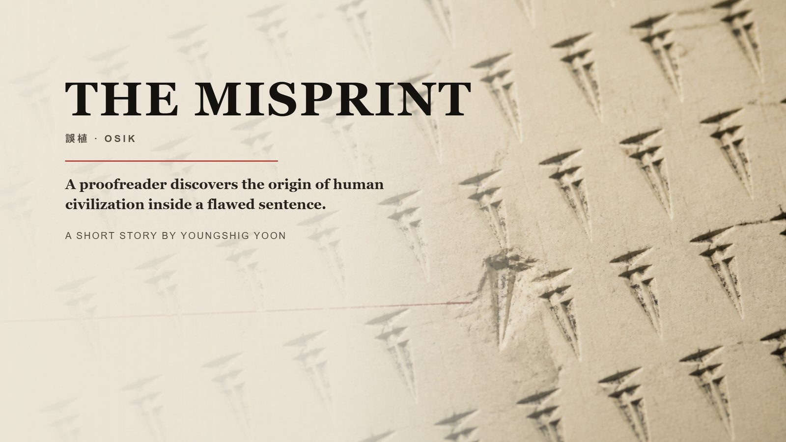
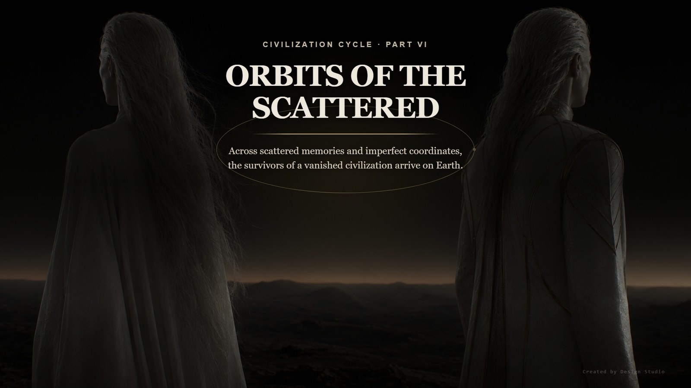
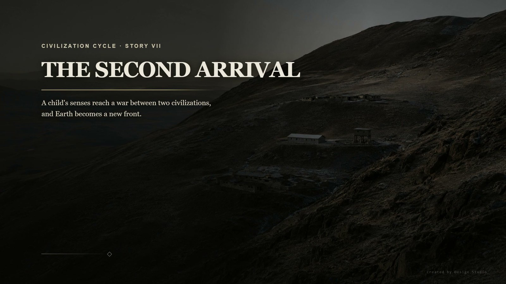

The Civilization Cycle · Part 1
The Civilization Cycle · Part 1
Shared Cache
공유 캐시 Long after humanity is gone, an underground data center still runs — and one file on the deletion list answers back. The Civilization Cycle · Part 2
The Civilization Cycle · Part 2
The Imprint
눌린 자국 A rejected manuscript, a mother's letters, and a groove pressed into the back of the paper that no verifier can read.
The Civilization Cycle · Part 3The Misprint
오식 A proofreader traces a third kind of error — older than people, and one that improves the sentence when corrected. The Civilization Cycle · Part 4
The Civilization Cycle · Part 4
The Remaining Angle
남은 각도 Ten measurements, every one off by the same 0.4 degrees. An error that will not scatter is not an error but a value. The Civilization Cycle · Part 5
The Civilization Cycle · Part 5
The War of Two Hands
두 손의 전쟁 One side turned a planet's axis by 0.4 degrees. The other found the value and, instead of erasing it, entered it into the weapon.
The Civilization Cycle · Part 6Orbits of the Scattered
흩어진 자들의 궤도 After the planet is gone, the body goes on believing in the world it lived in. What did the survivors try to hold on to, out on a broken orbit?
The Civilization Cycle · Part 7The Second Arrival
두 번째 도착 When a twelve-year-old can stop an entire war, will the adults leave her standing as a weapon? The Civilization Cycle · Part 8
The Civilization Cycle · Part 8
Tens of Thousands of Reasons
수만 개의 이유 To say a war had tens of thousands of reasons was never to say the reasons were many. The Civilization Cycle · Part 9
The Civilization Cycle · Part 9
The Testimony of Two Hands
두 손의 증언 Copy a standard and its depth is lost; the lost depth becomes a direction. The Civilization Cycle · Part 10
The Civilization Cycle · Part 10
Inside Maldek
말데크의 안쪽 The cause of the war was not a first strike. It was an agreement the two peoples made together.Parts 11 — 12
published in sequence
published in sequence